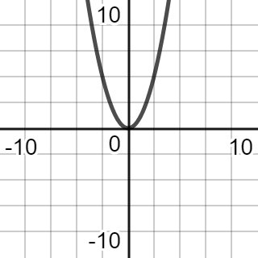

Polynomials
1. What is a Polynomial?
A polynomial normally follows the following pattern:
Where:
- a, b, c... = Coefficients of terms
- n, n -1... = Power of terms
2. Characteristics
2.1. Odd/Even
Odd functions are functions where, if you rotated it by 180 degrees from the origin, it’s appearance would be the same. This is known as rotational symmetry.
Even functions are functions that, when reflected on the y-axis, are symmetrical.
You can also calculate it with formulas.
If f(x) = f(-x), then it is even.
If f(-x) = -f(-x), then it is odd.
2.2. Degree
The degree of a function is what it's highest power is. For the equation x2 - 3x + 5, the degree is 2. The degree, specifically if it is odd or even, can tell us about the end behaviour of the function.
2.3. End Behaviour
End behaviours are the way a graph's y-value acts as x approaches +∞ (positive infinity) and -∞ (negative infinity).
They are written as:
...with the signs of infinity depending on the respective graph. If it is a standard exponential graph of f(x) = x2, for example.
Both ends go up (so y goes towards positive infinity) as x becomes greater (towards positive infinity) and smaller (negative infinity). Therefore we can write its end behaviour as:
If the degree of a polynomial is even, the end behaviour for both ends are the same. If the degree of a polynomial is odd, the end behaviours go in opposite directions.
2.4. Zeros
The x-intercepts of a graph can be solved by factoring the polynomial and solving for x; these are points whre the graph intersects the x-axis and y = 0.
The y-intercepts of a graph are when x = 0 and the graph crosses the y-axis. To solve, set x = 0 in the polynomial and solve for y.